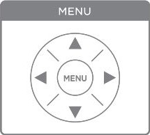

Delete a recording to clear up storage space.
When the pen's storage is full, follow these steps to delete a recording and free up space using the menu (fig. 4). Note: You must use the pen's menu. You cannot delete recordings based on notebook pages.
Figure 1. The Control Panel's "Menu" Section
![A map of the pen's menu annotated with arrows. The menu structure shown in the diagram is tier-based. To navigate within a tier, you must use the "up" and "down" icons. The first tier has "Main Menu," "Paper Replay," and "Bluetooth Audio." The tier under "Paper Replay" has "Record a New Session," "Play Session," and "Delete Session." Arrows, meant to represent user input, go from "Main Menu" to "Paper Replay," then right to select "Paper Replay" into "Record New Session," then down twice to "Play Session" and then "Delete Session," then right to select "Delete Session." Then, a combined up and down arrow span across scribbles representing user recording entries. A single right arrow from each of these entries points to an "X" to show that pressing the right icon on one of these entries will delete it.](../images/Menu_Navigation_for_Deleting_a_Recording.JPG) Figure 2. Deleting a Recording Using the Menu
Figure 2. Deleting a Recording Using the Menu
- On the Control Panel's "Menu" section, tap the center "MENU" icon with the writing tip of the pen (see fig. 3).
- Tap the "down" icon.
The screen will say, "Paper Replay."
- Tap the "right" icon.
The screen will say, "Record new session."
- Tap the "down" icon two times.
The screen will say, "Play Session," and then "Delete Session."
- Tap the "right" icon.
The screen will show the date of your last recording.
- To select which recording you will delete, tap the "up" and "down" icons. Recordings are named by the date and time they were recorded.
- To delete the selected recording, tap the "right" icon.
- (Optional) To quickly return to the home screen, tap the pen on any surface that isn't an icon.
You have deleted a recording and made space for new recordings.